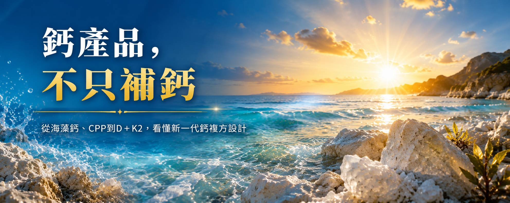
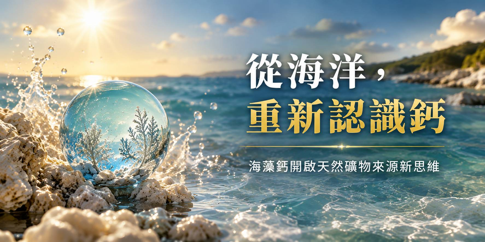
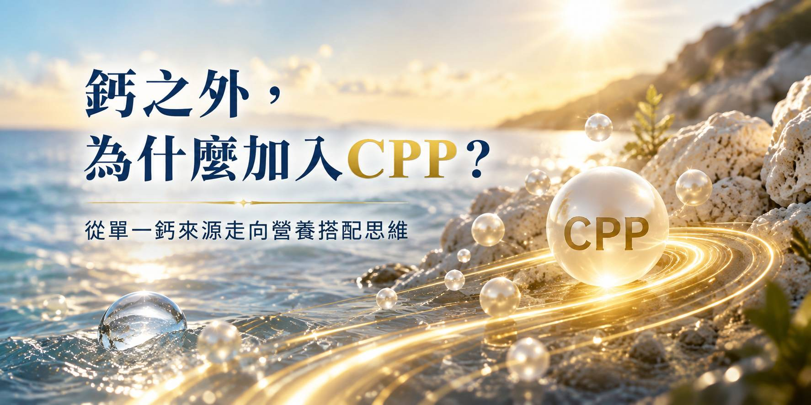
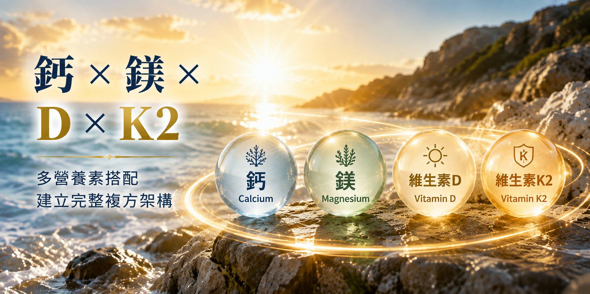
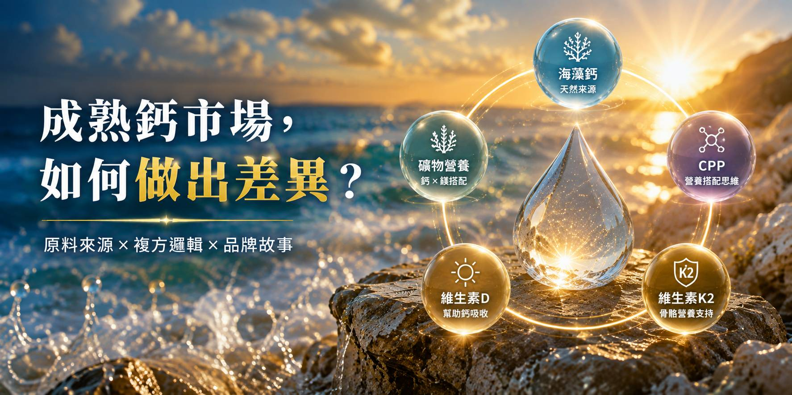
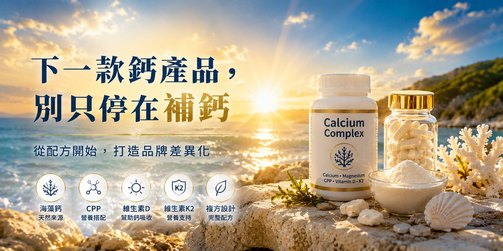

💡 從「單一鈣來源」走向多營養素搭配，鈣保健食品開發如何做出下一階段差異化？
鈣一直是保健食品市場中重要的基礎營養品類。但對品牌端而言，現在開發一款鈣產品，真正需要思考的已經不只是「要放多少鈣」而已。
鈣從哪裡來？搭配哪些營養素？
產品如何建立差異化？又該如何讓消費者快速理解配方價值？
從海洋來源的海藻鈣、鎂，到酪蛋白磷酸胜肽（CPP）、維生素D與維生素K2，新一代鈣產品可以透過不同營養成分的組合，建立更完整的產品設計邏輯。
01｜為什麼鈣一直是基礎保健的重要品類？

從日常飲食到營養補充，鈣都是不可忽略的重要礦物質
鈣是人體重要的礦物質之一，也是骨骼與牙齒的重要構成成分，同時參與肌肉、神經等正常生理功能。人體無法自行製造鈣，因此必須由日常飲食取得；當飲食攝取不足時，也可能透過營養補充方式補足。
也因此，「鈣」具有跨年齡層、基礎保健與長期補充等產品特性，是保健食品品牌長期關注的成熟品類。但成熟市場也代表產品高度同質化。
對品牌而言，下一步真正值得思考的是：
除了鈣含量之外，我的鈣產品還能說什麼？
02｜海藻鈣：從「鈣含量」走向「來源故事」

海洋來源礦物，成為鈣產品差異化設計的新方向
傳統鈣產品常見碳酸鈣、檸檬酸鈣等不同來源。近年產品開發則開始更加重視「原料來源」與消費者對天然來源的感受，其中海藻鈣便是值得關注的產品設計方向之一。
以 Aquamin® 海藻鈣為例，可將海洋、藻類與天然礦物來源轉化成清楚的產品故事。對 To B 品牌開發而言，這代表鈣產品不再只有「幾毫克」的競爭，而可以進一步建立：
海洋來源 × 礦物營養 × 天然形象 × 品牌故事
讓成熟的鈣品類重新產生產品辨識度。
03｜CPP是什麼？為什麼會出現在鈣複方？
酪蛋白磷酸胜肽，讓鈣配方開始思考「營養素之間的搭配」
CPP（Casein Phosphopeptides，酪蛋白磷酸胜肽）是由酪蛋白經水解等方式產生、含有磷酸絲胺酸結構的胜肽。相關研究指出，CPP具有與鈣等礦物質結合的特性，因此其與鈣的交互作用、鈣生體可用率等議題，長期受到食品與營養研究關注。
對產品開發而言，CPP最大的價值之一，在於讓鈣產品的設計思維從：
「我要放哪一種鈣？」
➔ 進一步變成：「鈣之外，我還可以搭配什麼？」

這也是「補鈣 ➔ 搭配 ➔ 完整複方」概念開始形成的地方。
04｜鈣＋鎂＋維生素D＋K2，為什麼常被放在一起思考？

從單一營養素，走向多營養素的配方架構
一款鈣產品可以只有鈣，也可以從不同營養素在人體中的角色出發，進一步建立複方。
- 🔹 鎂 Magnesium
鎂同樣是人體需要的重要礦物質，可作為鈣產品的礦物營養搭配之一。 - 🔹 維生素D Vitamin D
維生素D與鈣具有明確的營養關聯，其中一項重要生理角色就是幫助鈣的吸收。因此「鈣＋維生素D」也是市場上相當成熟的營養搭配。 - 🔹 維生素K2 Vitamin K2
維生素K參與體內部分蛋白質的正常作用，其中包含與骨骼相關的蛋白質。K2也因此成為近年複方鈣產品經常討論的營養素之一。
對品牌開發而言，真正重要的不是把原料越放越多，而是：
每一個成分，都必須在整體產品定位中有清楚的角色。
05｜新一代鈣產品，可以建立「補 × 搭 × 完整」的配方故事
鈣 × 鎂 × CPP × D × K2，讓成熟品類重新產生產品差異
如果從產品企劃角度重新整理，可以形成一個非常容易被市場理解的架構：
海藻鈣｜建立主要鈣來源
➕
海洋鎂｜增加礦物營養搭配
➕
CPP｜建立胜肽與礦物搭配概念
➕
維生素D｜搭配鈣營養
➕
維生素K2｜建立完整複方設計

這也是為什麼鈣產品的競爭，正在從單純比較「鈣含量」，逐漸走向：
原料來源 × 複方邏輯 × 科學資訊 × 消費者溝通 × 品牌定位
06｜To B鈣保健食品開發：品牌真正該先決定什麼？

不是先問「可以加什麼」，而是先決定「這款產品要賣給誰」
品牌準備開發海藻鈣、鈣鎂、CPP或D＋K2產品時，可以先從幾個方向定義：
- TA族群： 成人基礎營養、女性、熟齡族群、銀髮市場，產品溝通完全不同。
- 核心原料： 海藻鈣、不同鈣來源與複方原料，會直接影響成本與產品故事。
- 複方策略： 不是成分越多越好，而是成分之間能否形成容易理解的產品邏輯。
- 劑型與食用體驗： 錠劑、膠囊、粉包等不同劑型，也會影響每日攝取量、產品定位與成本結構。
- 法規與廣告溝通： 配方有研究資料，不代表所有研究用語都可以直接轉化成食品廣告宣稱；產品上市前仍須依台灣食品標示及廣告相關規範進行確認。
🤝 從一顆鈣開始，重新設計下一款鈣產品
下一款鈣產品，別只停在「補鈣」
當鈣市場已經相當成熟，品牌真正需要的並不只是再推出一款鈣產品。而是找到一個讓消費者看得懂、記得住，而且具有品牌差異化的產品設計。從海藻鈣、海洋礦物、CPP，到維生素D與K2，都可以成為產品開發時的配方素材。
真正的關鍵，是如何把這些素材整合成一個具有市場定位的產品。
正在規劃海藻鈣、鈣鎂、CPP、維生素D＋K2或熟齡營養新品？歡迎洽詢 BKE 百達醫保健食品 OEM／ODM 開發服務。從原料評估、配方設計、劑型規劃、法規檢視到量產製造，協助品牌將新品概念真正落地。
BKE 百達醫企業 | OEM / ODM 一站式保健食品代工